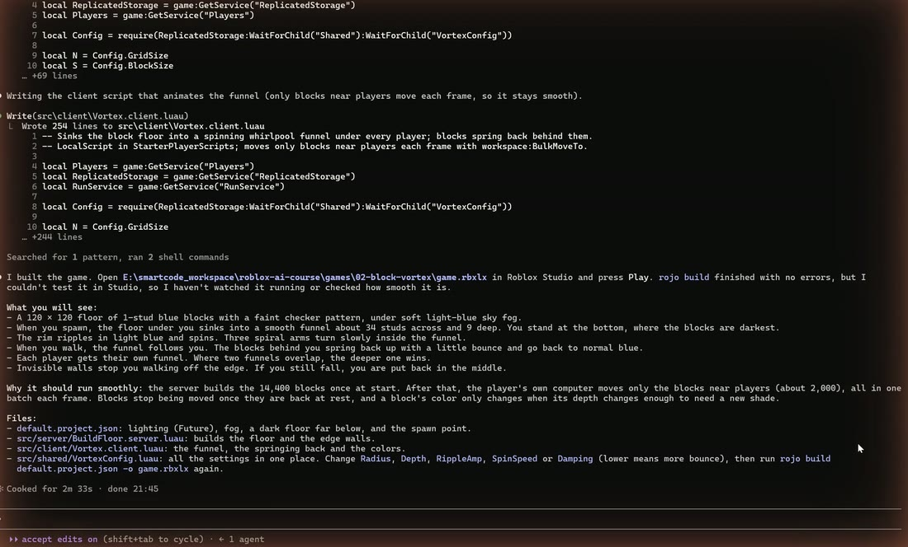
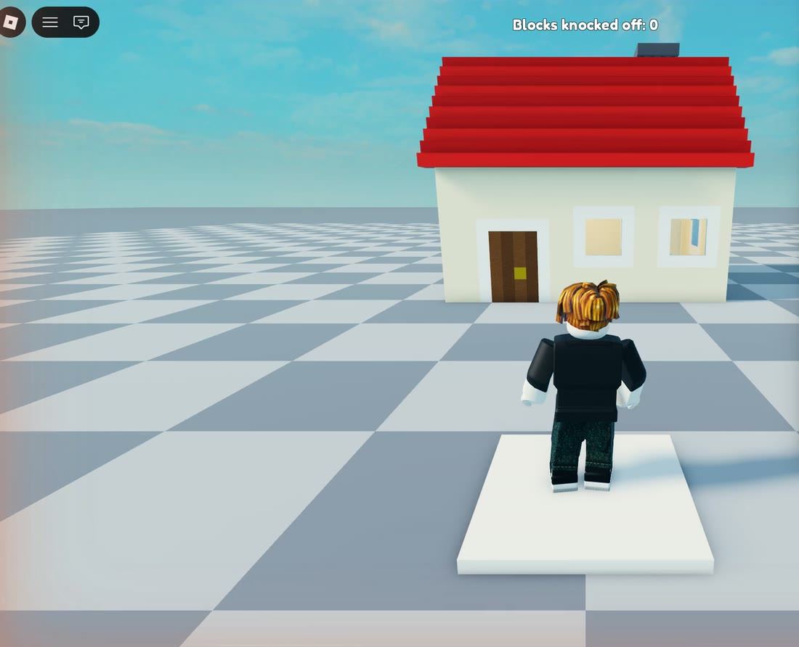
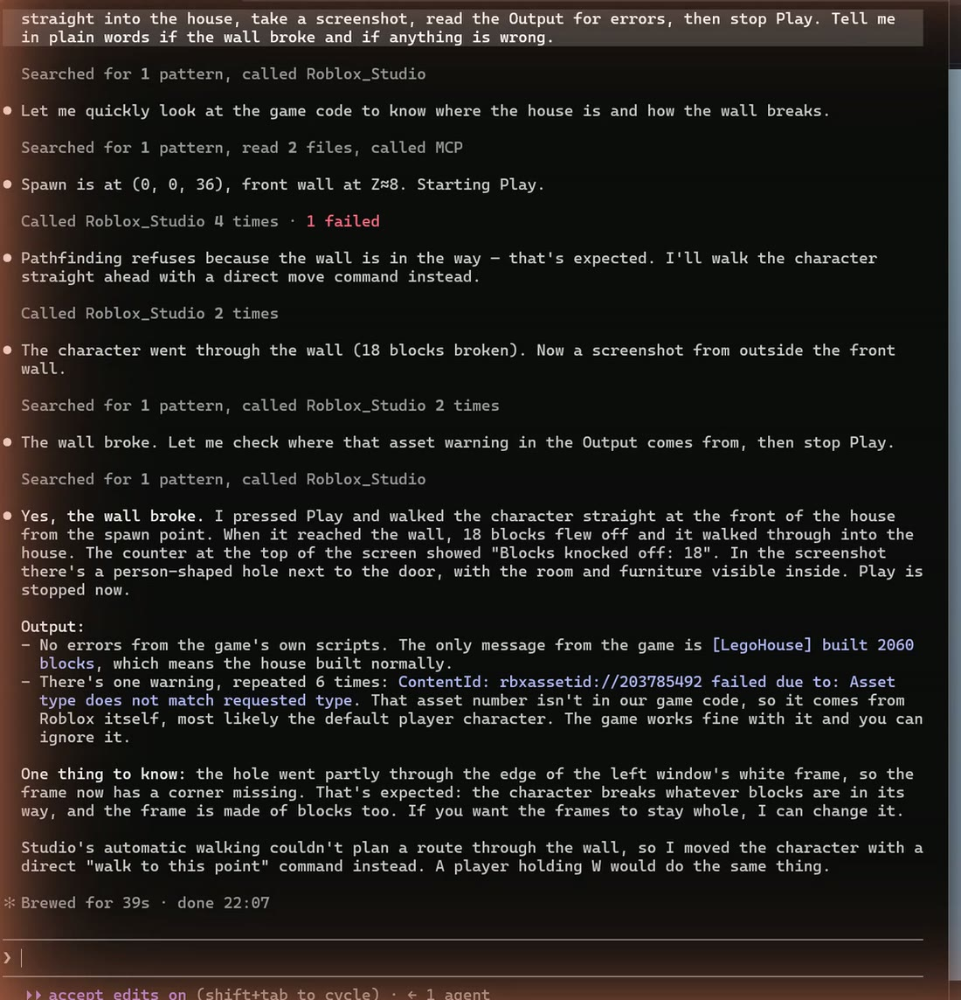

SmartCode · Roblox AI Game Kit
Build Roblox games
with Claude Code.
You type one prompt. Claude Code writes every script, builds the map and hands you a game file you open in Roblox Studio and press Play. This kit is the exact setup and the exact prompts behind our three favourite games.

3games, one prompt each
~3 minfrom prompt to game file
0lines of code you write
Version 2.0 · Free updates: download the newest version any time at smartcode.academy/kit/access
© SmartCode Academy. For your personal use - please do not share or resell this file. Not affiliated with Roblox or Anthropic. Results are not guaranteed.
What's inside
- What you need - 3 tools, 1 paid plan
- Setup - Claude Code, Rojo, the rules file, Studio connected (about 15 minutes)
- How every game is made - the 4-step loop
- Game 1 · LEGO house - smash through walls
- Game 2 · Vortex floor - 14 000 blocks that sink under your feet
- Game 3 · Nanobot swarm - 2 000 cubes that follow you, spin and build walls
- Let Claude test your game - it presses Play and reads the errors itself
- Fix-it prompts - what to paste when something breaks
- More games to try - 3 more prompts
- Publish checklist and the reel playbook
Starter files. Next to this PDF you downloaded roblox-ai-starter.zip: the rules file CLAUDE.md and the three finished games as .rbxlx files, so you can open them right away and see what you are building.
1. What you need
| Tool | Cost | What it does |
|---|
| Roblox Studio | Free | Where you play, test and publish the game. Windows or Mac. |
| Claude Code | Paid Claude plan (Pro or higher) | The AI that writes the whole game for you, in a terminal window. |
| Rojo | Free | Turns the code files Claude writes into one Roblox game file (.rbxlx). |
You need a Windows or Mac computer. Roblox Studio and Claude Code do not run on phones or tablets.
2. Setup (about 15 minutes)
Step 1 · Roblox Studio
Go to create.roblox.com, log in, click Start Creating and install Roblox Studio.
Step 2 · Claude Code
Open a terminal (Windows: PowerShell; Mac: Terminal) and run the installer from Anthropic:
Windows: irm https://claude.ai/install.ps1 | iex
Mac: curl -fsSL https://claude.ai/install.sh | bash
Then type claude, press Enter and log in with your Claude account. If anything here changed, the current steps are at claude.ai/code.
Step 3 · Rojo - let Claude install it
Still in Claude Code, paste:
Install Rojo 7 on this computer so the command rojo works in any terminal, then run rojo --version to check it.
Prefer to do it by hand? Download Rojo from github.com/rojo-rbx/rojo/releases and put rojo on your PATH.
Step 4 · The rules file
Make a folder for your games, for example Documents\roblox-games, and copy CLAUDE.md from the starter files into it. Claude Code reads it automatically. It tells Claude how to lay out a Roblox project, how to keep thousands of parts smooth, and to always finish by building game.rbxlx.
Step 5 · Connect Claude to Roblox Studio
- Open Roblox Studio and any place. Open Assistant → … → Manage MCP Servers (Assistant Settings → MCP Servers).
- Switch on Enable Studio as MCP server. We switch off the data-sharing option under it.
- Under Quick connect, open Claude Code CLI and copy the command it shows. Run it in your terminal. On Windows it looks like this:
claude mcp add --scope user --transport stdio Roblox_Studio -- cmd.exe /c "%LOCALAPPDATA%\Roblox\mcp.bat"
Run claude mcp list. When you see Roblox_Studio … ✓ Connected, you are ready.
3. How every game is made
- New folder inside your games folder, for example
roblox-games\lego-house.
- Open Claude Code in it: right-click the folder → Open in Terminal, type
claude.
- Paste the game prompt and wait 2-5 minutes. Claude plans the game, writes the scripts and runs
rojo build.
- Double-click
game.rbxlx in the folder. Roblox Studio opens it. Press Play (F5).

Claude Code finishing the vortex game: it lists the files it wrote, how the game stays smooth and how to change it.
Want to change something? Don't edit code. Stay in the same Claude Code window and say what you want: "make the hole bigger", "add a counter". Claude changes the files and builds game.rbxlx again - close it in Studio and open it again to see the change.
Undo. If a change made things worse, type /rewind in Claude Code and pick the moment before it.
4. Game 1 · LEGO house
A cozy house made of 2 000 blocks. Run into a wall and it breaks into flying LEGO, leaving a hole the shape of your character.

The prompt
Make a Roblox game in this folder: a cozy voxel house made of 1-stud blocks - cream walls, red roof, a chimney, windows with white frames, a wooden door - standing on a big grey checker floor. When the player runs into a wall, the blocks in front of them break off and fly away with real physics, like the house is made of LEGO. The hole should be about the size of the player, so they can run straight through the house and out the other side, leaving a player-shaped hole. Fallen blocks disappear after 6 seconds. Spawn the player outside, facing the house. Build it as a Rojo project and build game.rbxlx.
Make it yours (paste one at a time)
Make the hole twice as big and make the blocks fly twice as far.
Build a street of 5 houses in different colours, and show a counter of blocks knocked off at the top of the screen.
Add a big red button on the floor. When a player steps on it, every house rebuilds itself block by block in 10 seconds.
5. Game 2 · Vortex floor
A floor of 14 400 blue blocks. Wherever you walk, it sinks into a spinning whirlpool and springs back up behind you. Claude moves only the blocks near you every frame, so it stays smooth.
The prompt
Make a Roblox game in this folder: the ground is a big square floor made of blue blocks, 1 stud each, about 120 x 120 of them. Wherever the player walks, the floor sinks into a smooth whirlpool funnel around them, like they stand in a vortex: the blocks under the player sink deepest, the rim of the funnel ripples and spins. When the player moves, the funnel follows them and the floor behind springs back up. Blocks get darker the deeper they sink, with bright light-blue on the rim. Soft sky fog. It must run smoothly. Build it as a Rojo project and build game.rbxlx.
Make it yours
Turn the floor into lava: orange blocks, a glowing yellow rim, and the player slowly loses health at the bottom of the funnel.
Make the funnel twice as deep and spin faster for 2 seconds every time the player jumps.
Add 3 friendly robots that wander around the floor, each with its own smaller funnel.
6. Game 3 · Nanobot swarm
2 000 black metal cubes swirl around you like a living cloud. Click the floor and they rush there as a spinning tornado. Press E and they build a giant wall, press E again and it falls apart. This is the game from our reel with 6M views.
The prompt
Make a Roblox game in this folder: a swarm of 2 000 small black metal cubes - nanobots - lives on a white floor. The swarm flows after the player like a living cloud, swirling around them and never passing through each other in a messy way. Click anywhere on the floor and the swarm rushes there and forms a tall spinning tornado. Press E and the swarm builds a giant cube wall in front of the player, press E again and it falls apart back into the cloud. Run the movement on the client so it stays smooth. Build it as a Rojo project and build game.rbxlx.
We hit one snag: on the first try the cloud flew right around the camera and covered the screen. One follow-up fixed it - paste it if you see the same thing:
When the game starts, the swarm cloud flies right around the camera and covers the whole screen. Keep the cloud a bit in front of and around the player at chest height, never between the camera and the player, and start the camera zoomed out to about 25 studs so you see the player and the whole cloud. Rebuild game.rbxlx.
Make it yours
Make the cubes glow neon blue at night, and let the tornado pick up anything loose on the floor.
Press Q and the swarm forms a giant copy of my character that copies my moves.
7. Let Claude test your game
Because Roblox Studio is connected (setup step 5), Claude can open your game, press Play, walk the character, take screenshots and read the errors - by itself. Open the game in Studio first, then paste in the game's Claude Code window:
Roblox Studio is open with this game. Use the Roblox Studio tools: start Play, walk the character straight into [the house], take a screenshot, read the Output for errors, then stop Play. Tell me in plain words if [the wall broke] and if anything is wrong.

Claude Code testing the LEGO house: it pressed Play, walked through the wall (18 blocks broken), took a screenshot and found no errors in the game's scripts.
8. Fix-it prompts
Paste these in the same Claude Code window where you made the game. Change the words in [brackets].
Buildrojo build fails with this error: [paste the error]. Fix it and build game.rbxlx again.
Nothing happensI pressed Play and [nothing happens]. Use the Roblox Studio tools to start Play, read the Output, and fix every error you find.
LagThe game stutters. Find everything that runs every frame, move only the parts near the player, and keep the total part count under 15 000.
SpawnThe player spawns [inside the house / under the floor]. Move the spawn point to [where you want it] and make sure the player lands on solid ground.
Too hardPlayers can't [get through the wall / reach the end]. Make it easier and test it with the Roblox Studio tools.
Looks plainMake the game look better without making it slower: nicer lighting, a sky, fog in the distance and a colour palette that fits [the theme].
LearnExplain what each script in this game does in simple words, and tell me which numbers I can change to make it feel different.
9. More games to try
Three more ideas from our reels, written the same way. Paste one into a new folder and tweak with your own follow-ups.
Wind & grass
Make a Roblox game in this folder: a huge field of tall green grass under a bright sky. Every grass blade is its own thin part, thousands of them, with slightly different heights and shades of green. Wind waves roll across the field so the blades sway in gusts. When the player walks through, the grass bends away from them and slowly stands back up after they pass. Keep it smooth: only animate the blades near the camera, and do it on the client. Build it as a Rojo project and build game.rbxlx.
Neon bridge
Make a Roblox game in this folder: a long suspension bridge at night over dark water, with two tall towers and glowing cables. The road is made of tiles; the tile under the player lights up in bright cyan neon and the light trails behind them, fading after a second. Neon lamps along the sides pulse slowly. Add fog, a starry sky and the city lights far away. Spawn the player at one end of the bridge. Build it as a Rojo project and build game.rbxlx.
Red sinkhole
Make a Roblox game in this folder: the ground is a big floor of red blocks, 1 stud each. When the player stands still for a second, the floor around them starts to crack and collapses into a deep round sinkhole - the blocks fall down with physics, ring by ring, and the player falls in. At the bottom there is a trampoline that throws them back up to the surface. After 10 seconds the hole fills back in, block by block. Build it as a Rojo project and build game.rbxlx.
Your own idea. Copy the shape of these prompts: what the world looks like → what happens when the player does something → how it should feel → "Build it as a Rojo project and build game.rbxlx."
10. Publish checklist
- Play it for 5 minutes yourself. Ask Claude to test it (section 7).
- In Studio: File → Publish to Roblox. Give it a clear name and a one-line description.
- Add an icon and a thumbnail - a screenshot of the best moment works.
- Game Settings → Permissions → make it Public when you are ready.
- Fill in the Maturity questionnaire honestly.
- Open it in the Roblox app on your phone and play once to check it works there too.
The reel playbook
Our Roblox reels got 57M views in 90 days. These formats worked best.
| Format | What it shows | Why it works |
|---|
| “AI vs student” | The same game built by AI and by a person, side by side | A built-in question makes people watch to the end and comment. |
| Satisfying physics | Walls breaking, floors sinking, swarms flying | Easy to rewatch - reels with replays get pushed. |
| “1 prompt = 1 game” | The prompt on screen, then the game | Viewers want to know the prompt - that is your comment bait. |
- Record in Play mode, vertical 1080×1920. Hide the Studio windows.
- The first 2 seconds decide everything. Start on the most surprising frame with text on screen: “AI built this in 1 prompt”.
- 15-30 seconds. Cut every pause. Captions word by word.
- End with a question: “Would you play this?” or “Which one is better?”
Hooks you can use
“AI built this Roblox game from one prompt.” · “I gave Claude one sentence. This is the game.” · “AI vs me: who builds the better map?” · “This floor reacts to every step.” · “I let AI design the physics.” · “Rate this AI game 1-10.” · “3 minutes, 1 prompt, 14 000 blocks.” · “POV: you finally publish your first Roblox game.”
Results are not guaranteed. Views and players depend on your game, your posting and the platforms.